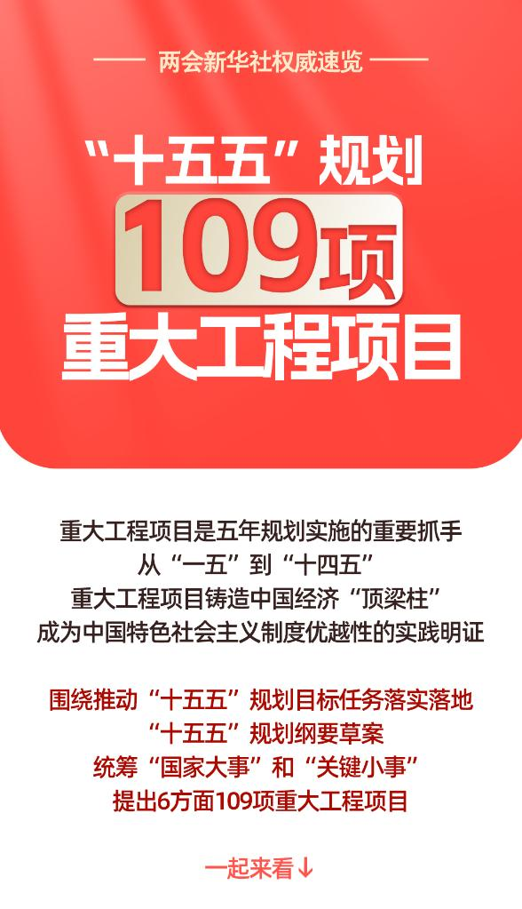
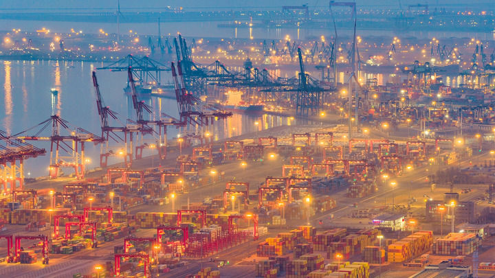
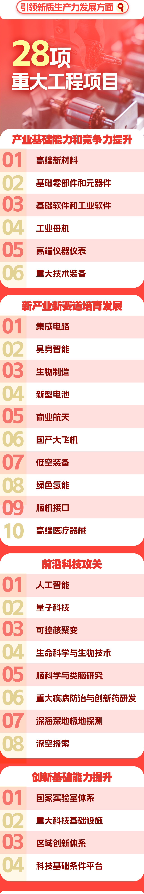
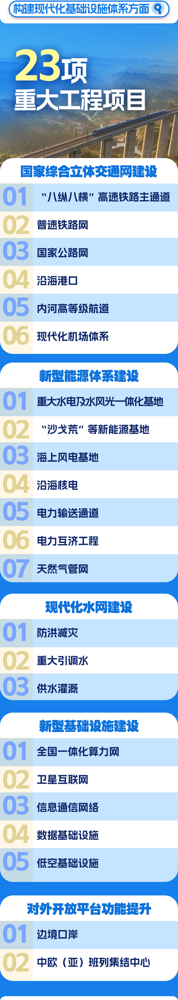
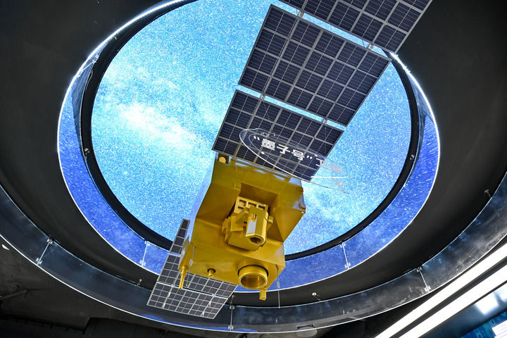
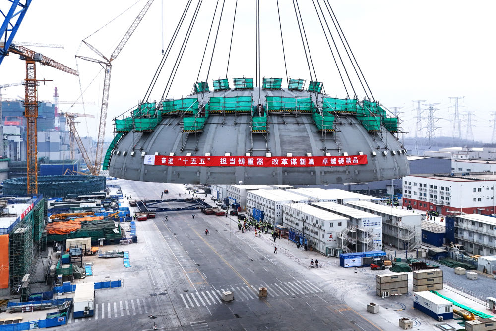
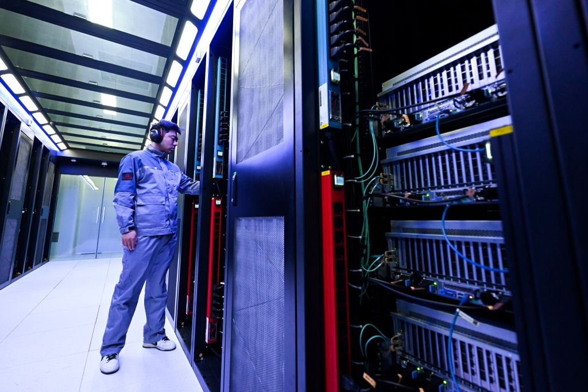
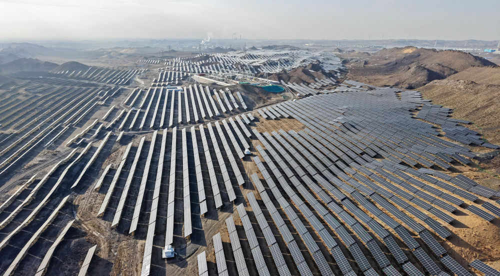

以 2026 年 3 月 13 日新华网全文发布的《中华人民共和国国民经济和社会发展第十五个五年规划纲要》为核心材料， 提炼其历史方位、重点任务、重大工程与产业抓手，形成一套适合专题宣讲与课堂汇报的 8 页摘要。
纲要明确“十五五”时期是承前启后、夯实基础、全面发力的关键阶段。 对内，它回答高质量发展怎么干；对外，它释放中国在复杂环境中坚持办好自己事情的战略定力。

纲要把“推动经济实现质的有效提升和量的合理增长”放在中心位置， 同时把改革创新、共同富裕、统筹发展和安全一并纳入整体部署。

中国特色社会主义制度优势、超大规模市场优势、完整产业体系优势继续凸显。
外部环境更趋复杂，内部仍面临需求不足、动能切换、风险隐患等现实压力。
不是“守摊子”，而是在承接“十四五”成果基础上主动塑造下一阶段发展格局。
纲要一方面推动传统产业高端化、智能化、绿色化改造，另一方面明确战略性新兴产业、未来产业和基础设施工程的整体布局。


纲要把科技创新单独成篇，说明科技不再只是支撑项，而是引领产业升级、塑造国家竞争力的核心变量。


在数字中国章节，纲要不只讲数据和平台，而是把算力、算法、数据、应用和治理一并纳入国家级建设逻辑。


纲要把绿色转型单独成篇，强调积极稳妥推进碳达峰，同时从能源系统层面提高电力安全韧性和资源配置效率。
既要实现绿色低碳转型，也要保障能源安全和经济运行稳定。
新能源基地、电网通道、储能系统、算力园区正在形成更强耦合。
这决定了“十五五”时期能源建设既是环保议题，也是国家竞争力议题。
如果只记住一句话，这份纲要讲的不是“下一步继续干”，而是要在关键五年里把产业、科技、民生、治理和安全的支撑体系同步抬起来。
本页及整套 deck 采用你的 `T1` 模板做党政化改造：浅底、红金强调、规范标题栏、证据化配图， 目的是兼顾正式感、可读性和课堂展示效果。